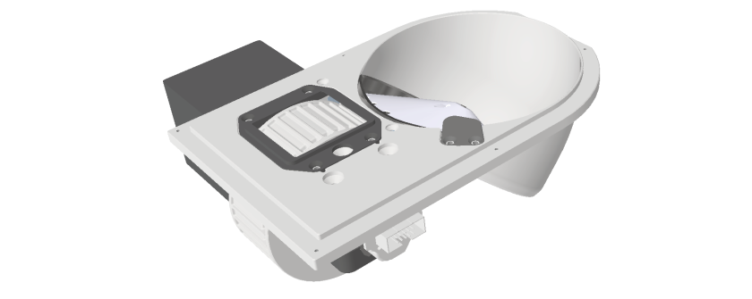

Foraging Patch#
The foraging patch, consisting of the foraging wheel and the pellet delivery system, is utilised with the foraging patch acquisition module to provide a means for animals to obtain food in the habitat by rotating the wheel, simulating a naturalistic digging action.
The foraging wheel features two sets of pockets on its surface: “grip pockets” that allow the animal to grasp and rotate the wheel, and “pellet pockets” designed to collect food pellets. The wheel’s pivot is supported by ball bearings for unidirectional rotation and a magnetic encoder measures the wheel’s movement. Pellets are stored in an underground hopper and are dispensed onto the wheel via a motor-driven spinning disk. An infrared beam-break sensor detects the pellets as they are delivered.
Dimensions: L = 190mm, W = 168mm, H = 83mm
Parts list#

Assembly guide#
Pellet hopper#
Steps 1-5
1. Create a flat surface on the motor shaft by filing it or using a handheld dremel.#
2. Rotate the foraging patch base and insert the motor. Screw the motor in place from the front using three screws (ID 2).#
3. Carefully handle the track and gently insert it in the foraging patch making sure of aligning the holes. Rotate the foraging patch base and hold the track in place by using six screws (ID 5).#

4. Lower the disk into the foraging patch base making sure to orient the grub screw tapped hole toward the flat surface previously created on the motor metal pin (see step 1). Push down the disk until the top of the pin is flush to the disk itself and use a grub screw (ID 10) to hold the disk in place. Make sure the grub screw touches the flat surface of the trimmed motor pin.#
5. Insert two short silicon tubes in each pellet stopper pin and screw it in place with two screws (ID 4).#
Infrared sensor#
Wheel assembly#
Steps 9-14
9. Hold the wheel holder base on the back of the foraging patch base and screw it in place with 3 screws (ID 11, see colours).#
10. Insert two parallel pin (ID 13) in the middle holes. If needed, enlarge the holes using a reamer.#
11. Slide the one-way bearing, the spacer and the two-way bearing onto the bolt.#
12. Insert the shoulder bolt into the wheel hole and tighten it in place using a lock nut. If needed, enlarge the hole using a reamer. Holding the shoulder bolt, insert the magnet holder on the cap and put the neodymium magnet into place (the magnet will hold its position).#
13. Rotate the foraging patch on its back and place the shoulder bolt with the bearings onto the wheel holder base. The wheel should sit within the foraging patch base opening (blue).#
14. Lower the wheel holder top onto the bearing and insert the pins. Carefully align the holder base and top using the pins as well as 4 screws (ID 9).The aim is to obtain an equally spaced gap between the wheel holder base and the top.#
Magnetic encoder#
Electronics#
Steps 17-19
17. Screw the electronic box on the side of the foraging patch base (ID 6) and insert the foraging patch electronics. The screws need to be inserted from the inside of the box itself.#
18. Add the Raspberry Pi Pico to the foraging patch electronics.#
19. Close the box with the electronic box lid (ID 8).#
Foraging patch tile#
Steps 20-21
20. Attach the assembled foraging patch to the metal hexagon tile using 6 screws (ID 3). Note: make a 1.25mm thick and 18mm wide rim all around the bottom of the metal hex tile using a milling machine.#

21. To complete the foraging patch, add the tile orienting the tile engraving with the foraging patch. Metal tile and foraging patch tile should be flush and only the wheel exposed.#